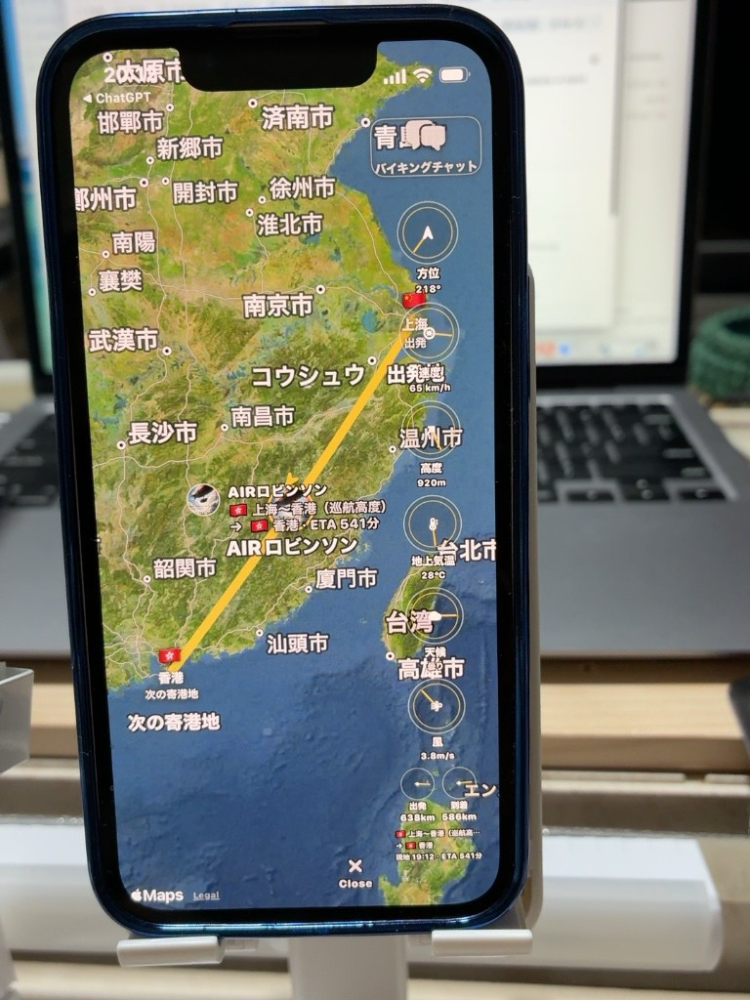

🇯🇵 富士山
日本・世界文化遺産
標高3,776m。日本一高い山を空から眺め、信仰と芸術の歴史をガイドが案内します。
Tandem AIR System のアプリ紹介ページです。
AIRロビンソンの飛行船で、世界を一周する35日間の空の冒険へ。
世界各地の世界遺産や名所を空から訪問。美しい景色を眺めながら、ガイドによる歴史・文化・見どころの案内を楽しめる体験を目指しています。
音楽とともに国境を越え、世界中の仲間と出会う新しい旅を構想しています。
35日間で35か所に限定せず、各地の歴史や自然をガイド付きで巡る旅を計画しています。
日本・世界文化遺産
標高3,776m。日本一高い山を空から眺め、信仰と芸術の歴史をガイドが案内します。
アメリカ・世界自然遺産
コロラド川が刻んだ壮大な大峡谷。重なり合う地層から地球の歴史をたどります。
中国・世界文化遺産
山の稜線に沿って連なる長城を空からたどり、その建設と防衛の歴史を紹介します。
ペルー・世界複合遺産
アンデスの山々に囲まれたインカ文明の遺跡。石造建築と山岳景観を案内します。
カナダ・アメリカ・世界の絶景
国境にまたがる巨大な滝を空から眺め、水の力と周辺の自然を紹介します。
トルコ・世界文化遺産
奇岩と色鮮やかな熱気球が広がる景色。岩窟住居と歴史をたどります。
エジプト・世界文化遺産
古代エジプトの巨大建造物を上空から見渡し、ファラオの時代を紹介します。
カンボジア・世界文化遺産
アンコールワットを中心に、クメール王朝の寺院群を空から巡ります。
インド・世界文化遺産
白い大理石の霊廟と対称的な庭園を眺め、その物語を紹介します。
オーストラリア・世界自然遺産
広大なサンゴ礁の海を空から見て、豊かな生態系を学びます。
ブラジル・アルゼンチン・世界自然遺産
熱帯雨林に囲まれた大瀑布を眺め、国境を越える自然の迫力を伝えます。
フランス・世界文化遺産
潮の満ち引きで表情を変える修道院の島。中世の歴史を案内します。
イタリア・世界文化遺産
運河と島々が織りなす水の都を空から訪ね、その文化を紹介します。
ベトナム・世界自然遺産
海から突き出す無数の石灰岩の島々。幻想的な湾の成り立ちをガイドします。
ヨルダン・世界文化遺産
岩を彫って築かれた古代都市の壮観と交易の歴史を紹介します。
ギリシャ・世界複合遺産
巨大な岩柱の上に建てられた修道院群を空から訪ねます。
タンザニア・世界自然遺産
広大なサバンナを眺め、野生動物の移動と生態系を紹介します。
エクアドル・世界自然遺産
独自の進化を遂げた生き物たちの島々を空から巡ります。
※世界遺産の空中訪問・ガイド機能は企画・開発中の構想です。現在利用できる機能を示すものではありません。
航行中の地球画面です。実機の表示をそのまま掲載しています。

Apple Musicが提供する1億曲以上の楽曲に、AIRロビンソンからスムーズにアクセスする体験を目指しています。好きな曲とコレクションを選び、ワンタップで再生へ進む「ワンタップ GO」を開発中です。
曲の提供とライブラリ管理はApple Music側のサービスです。AIRロビンソンがApple Musicの全楽曲を所有・独自管理するものではありません。利用には対応端末とApple Musicの利用条件が適用されます。
※アプリ連携機能は開発中です。このページのボタンはアプリでの再生開始ではなく公式サービスへの案内です。